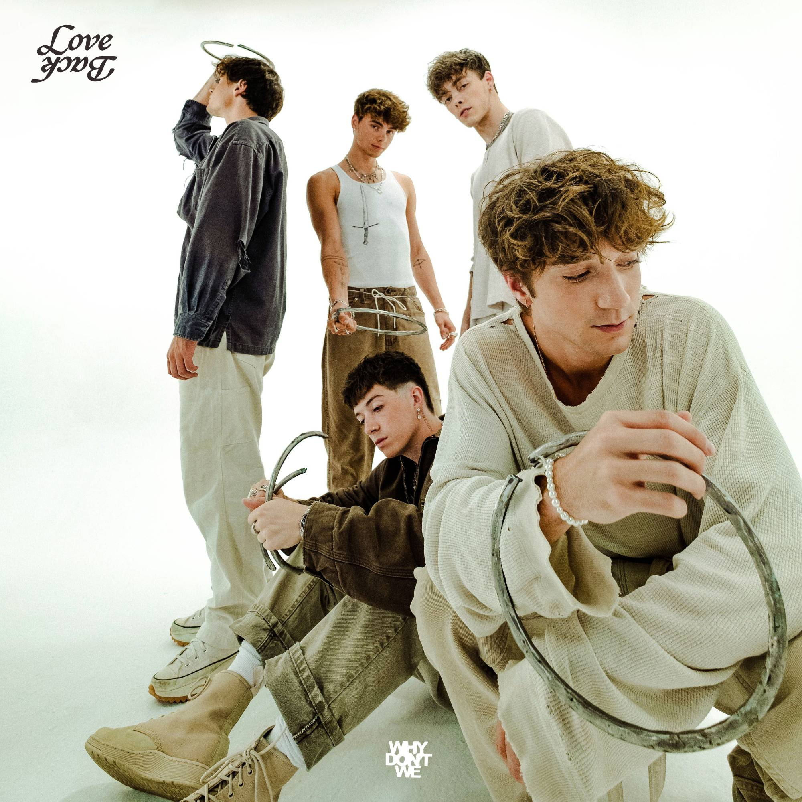
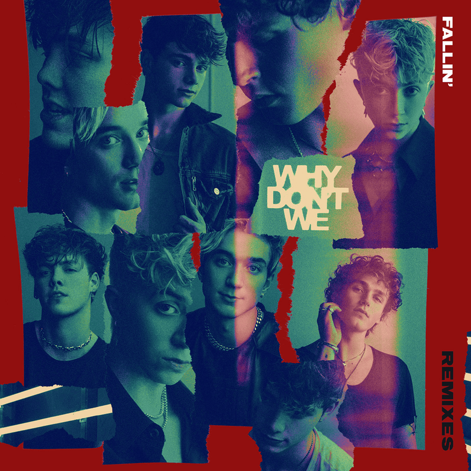
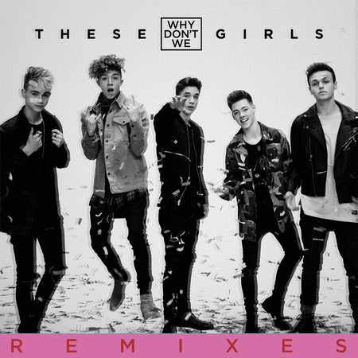
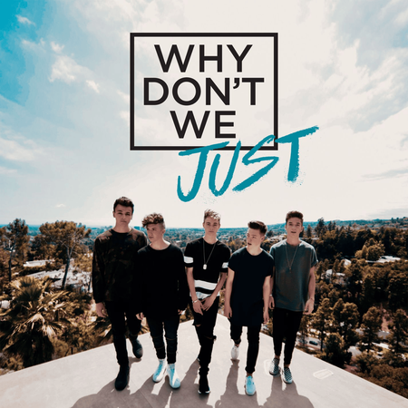

All albums of Why Don't We
2017
 (1).jpg)
good times and bad ones
2016

love back
2016

Fallin
2019

these girl
2018
trust fund baby
2020


Caught in the moment, not even thinkin' twice
Everything's frozen, nothing but you and I
Can't stop my heart from beating
Why do I love this feeling?
Make me a promise, tell me you'll stay with me
If I'm bein' honest, I don't know where this leads
But that's the only question
Baby, don't keep me guessin'
Ooh
You are my muse
I feel so reckless
Oh, you're makin' me, makin' me, makin' me give in
Oh, baby, I can feel the rush of adrenalin
I'm not scared to jump if you want to
Let's just fall in love for the hell of it
Maybe we'll just keep fallin'
I can feel the rush of adrenaline
I'm not scared to jump 'cause I want you
Let's just fall in love for the hell of it
Maybe we'll just keep fallin'
When I'm around ya, I feel it in my veins
There's something about ya that's makin' me go insane
We have a storm to weather
My little sweet surrender
Ooh (Woah)
You are my muse (You are my muse)
I feel so reckless
Oh, you're makin' me, makin' me, makin' me give in
Oh, baby, I can feel the rush of adrenaline
I'm not scared to jump if you want to
Let's just fall in love for the hell of it
Maybe we'll just keep fallin'
I can feel the rush of adrenaline
I'm not scared to jump 'cause I want you
Let's just fall in love for the hell of it
Maybe we'll just keep fallin'
(Fallin', fallin', fallin', fallin') Fall, fallin'
(Fallin', fallin', fallin', fallin') Fallin'
(Fallin', fallin', fallin', fallin') Fallin'
Maybe, we'll just keep fallin'
Ooh
You are my muse
I feel so reckless
Oh, you're makin' me, makin' me, makin' me, makin' me
Makin' me, makin' me, makin' me give in
Oh, baby, I can feel the rush of adrenaline
I'm not scared to jump if you want to
Let's just fall in love for the hell of it
Maybe we'll just keep fallin' (Just keep fallin')
I can feel the rush of adrenaline (Adrenaline, ooh)
I'm not scared to jump 'cause I want you (I want you)
Let's just fall in love for the hell of it
Maybe we'll just keep fallin' (We'll just keep fallin')
(Fallin', fallin', fallin', fallin') Yeah
(Fallin', fallin', fallin', fallin') We'll just keep fallin'
(Fallin', fallin', fallin', fallin') Ooh, ooh
Maybe we'll just keep fallin'
I met her on a Monday evening
She was standing outside of the park and ride
And I said, "Hey ma, where you been?"
"Been looking for a woman like you for all my life"
And she said, "Hola, talk to me, before I have to leave"
And one day we could be
Maybe more than two lost souls just passing by
Knew I was falling when I looked inside your eyes
She said, "I know you are, but what am I?"
Tell me, have you seen a sunset
Turn into a sunrise?
Kiss right through the night?
'Cause we should try that sometime
Hold you 'til the mornin'
And if I said I'm fallin', would you just reply
"I know you are, but what am I?"
(Ah-ooh, ah-ooh)
(Ah-ooh, ah-ooh)
Open the door to my apartment, when we get in
Kissin' on my neck and throw my jacket to the side
And I know your heart is beating quick
And if you put your head on my chest, hear the same in mine, yeah
And we'll be making love
Until the sun comes up
But one day maybe I
I could put a ring on your finger before you change your mind, yeah
Knew I was falling when I looked inside your eyes
She said, "I know you are, but what am I?"
Tell me, have you seen a sunset
Turn into a sunrise?
Kiss right through the night?
'Cause we should try that sometime
Hold you 'til the mornin'
And if I said I'm fallin', would you just reply
"I know you are, but what am I?"
(Ooh-ooh, ooh-ooh)
What am I?
(Ah-ooh, ah-ooh)
Tell me, have you seen a sunset
Turn into a sunrise?
Kiss right through the night?
'Cause we should try that sometime
Hold you 'til the mornin'
And if I said I'm fallin', would you just reply
"I know you are, but what am I?"
Tell me, have you seen a sunset (Yeah)
Turn into a sunrise?
Kiss right through the night? (The night)
'Cause we should try that sometime (Try that sometime)
Hold you 'til the mornin' (Hold you 'til the morning)
And if I said I'm fallin', would you just reply
"I know you are, but what am I?"
What am I?
What am I?
Oh, what am I?
What am I?
What am I?
What am I?
I don't want a girl who gets a car for her sweet 16
Or spends a stack of dollar bills on a limousine
I want a girl who takes the bus and who wears baggy jeans
Rockin' Nike Airs, what the hell are Louboutins?
Don't want no fake tan, short skirt, daddy's money don't work
Shop until you drop on the town
I want a smart girl, stronger than her father
Someone who will laugh and tryna fit in the crowd (ah-ow, ow)
And all we used to dream about
Is getting rich and getting out
Move to the nicer part of town
Where we'd have numbers on our house
It took a while to figure out
What type of girl that I'm about
Who brings the real man out of me, yah
I don't really want no trust fund baby
I like my women independent
And I say to people, "That's my lady"
And we don't need nothing e-e-e-else
I don't want no trust fund baby
Save your money, don't spend it
And I say to people, "That's my lady"
And we don't need nothing e-e-e-else (I don't want no-)
Don't want a girl who take selfies, want her makeup free
Don't want no mean girl lady, a pink prom Queen
I want a girl who climbs trees, always dirt on her jeans
Her daddy told her how to fix cars, maybe she could fix me
I want a throwback kid who loves Missy Elliot
Who for my birthday, makes a mixtape and puts it on cassette
Want a girl with common sense, who's dripping in competence
Don't wanna die to get rich, but she loves 50 Cent (ah-ow, ow)
And all we used to dream about
Is getting rich and getting out
Move to the nicer part of town
Where we'd have numbers on our house
It took a while to figure out
What type of girl that I'm about
Who brings the real man out of me, yah
I don't really want no trust fund baby
I like my women independent
And I say to people, "That's my lady"
And we don't need nothing e-e-e-else
I don't want no trust fund baby
Save your money, don't spend it
And I say to people, "That's my lady"
And we don't need nothing e-e-e-else
I don't want no- (no, I don't want me)
I don't want no trust fund baby (no, I don't want me)
I just want me a proper lady (no, I don't want me)
I don't want no trust fund baby (no, I don't want me)
I don't really want no trust fund baby
I like my women independent (hey!)
And I say to people, "That's my lady" (that's my lady, na-na-na-na-na)
And we don't need nothing e-e-e-else
I don't want no- (no, I don't want me)
I don't want no trust fund baby (no, I don't want me)
I just want me a proper lady (no, I don't want me)
I don't want no trust fund baby (no, I don't want me)
No, I don't want me
You know my worst, see me hurt, but you don't judge
That right there is the scariest feeling
Opening and closing up again
I've been hurt, so I don't trust
Now here we are, staring at the ceiling
I've said those words before, but it was a lie
And you deserve to hear them a thousand times
If all it is is eight letters
Why is it so hard to say?
If all it is is eight letters
Why am I in my own way?
Why do I pull you close?
And then ask you for space
If all it is is eight letters
Why is it so hard to say?
Isn't it amazing how almost every line on our hands align?
When your hand's in mine
It's like I'm whole again, isn't that a sign?
I should speak my mind
I've said those words before, but it was a lie
And you deserve to hear them a thousand times
If all it is is eight letters
Why is it so hard to say?
If all it is is eight letters
Why am I in my own way?
Why do I pull you close?
And then ask you for space
If all it is is eight letters
Why is it so hard to say? (Woah, oh yeah)
When I close my eyes
It's you there in my mind
When I close my eyes
If all it is is eight letters
Why is it so hard to say?
If all it is is eight letters
Why am I in my own way?
Why do I pull you close?
And then ask you for space
If all it is is eight letters
Why is it so hard to say?
If all it is is eight letters
When I close my eyes
It's you there in my mind (it's only you)
When I close my eyes
If all it is is eight letters
When I close my eyes
It's you there in my mind (you)
When I close my eyes
If all it is is eight letters



